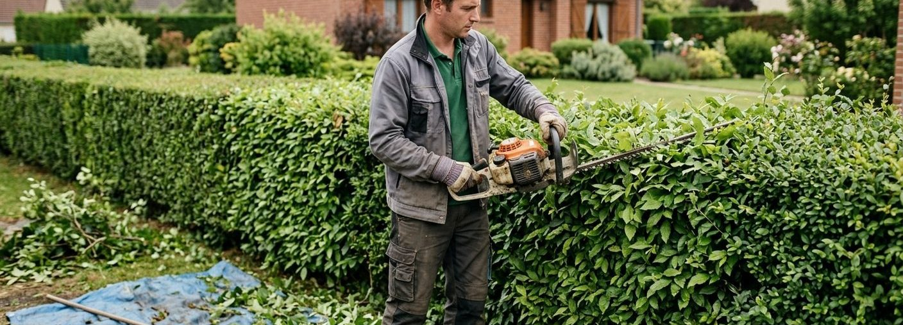
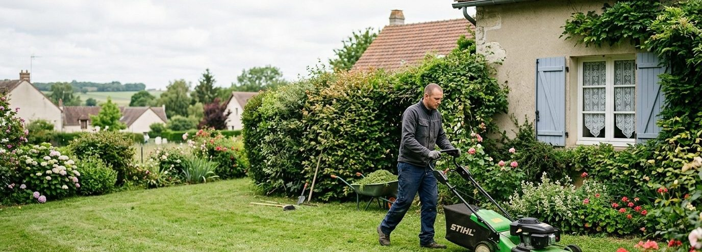
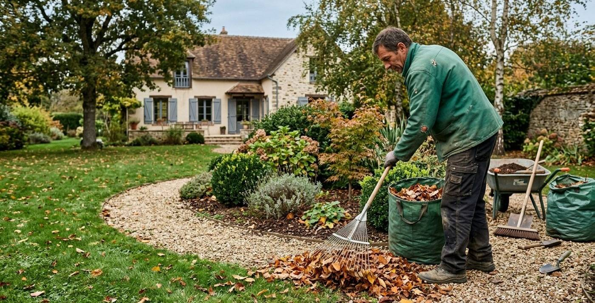
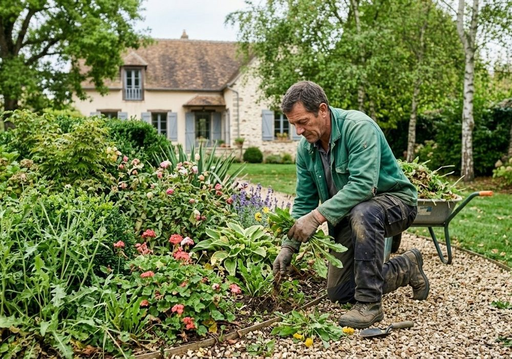
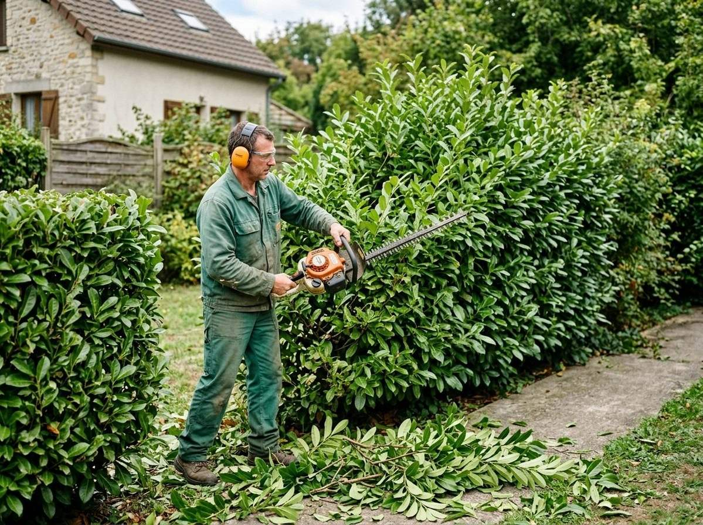
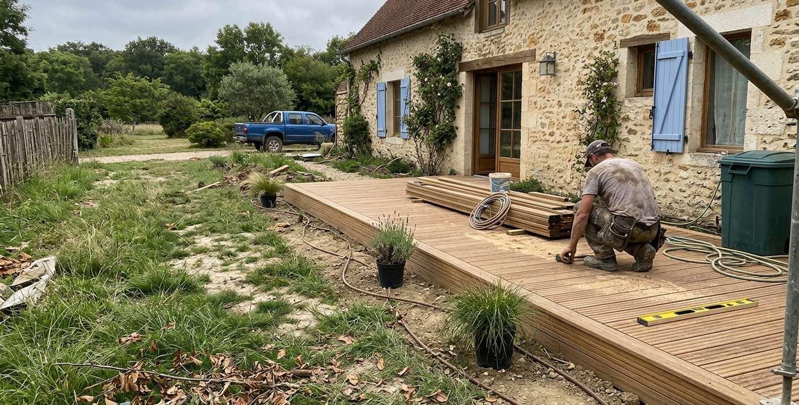

Conception
Une réflexion sur l'organisation des allées, des massifs et des pelouses.
Nos prestations
Quatre domaines d'intervention pour vos espaces verts, à Marly-le-Roi et aux alentours.



Création
La création d'un jardin part de vos besoins, du terrain et de l'usage que vous souhaitez en faire.
Une réflexion sur l'organisation des allées, des massifs et des pelouses.
Des massifs composés de végétaux choisis selon le lieu.
Plantation
Arbres, arbustes, haies ou vivaces : la plantation donne sa structure au jardin.



Image d'illustration.
Entretien
Un jardin demande un suivi régulier, ponctuel ou récurrent, selon vos besoins.


Aménagements
Pelouse, allées, terrasses : des aménagements pensés pour l'usage du jardin.
Dites-nous ce dont vous avez besoin : création, plantation, entretien ou aménagement.
Création et entretien de jardins à Marly-le-Roi (78).
© Le Petit Carré Vert · Maquette de démonstration